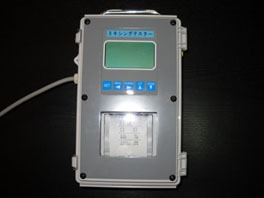
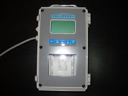

新開発の撹拌装置とミキシングテスターで高品質のコラムを築造する新しいソイルコラム工法です。
ウルトラコラム工法は、セメント系固化材スラリーを用いる機械撹拌式深層混合処理工法です。独自形状の十字型共回り防止翼を有する掘削ヘッドを採用し、粘性土地盤などで問題となる土の共回り減少による撹拌不良を低減。また、施工直後にコラムの比抵抗をミキシングテスターで測定し、撹拌状況を確認することで、高品質のコラムを築造できます。
新開発の撹拌装置とミキシングテスターで高品質のコラムを築造する新しいソイルコラム工法です。
ウルトラコラム工法は、セメント系固化材スラリーを用いる機械撹拌式深層混合処理工法です。独自形状の十字型共回り防止翼を有する掘削ヘッドを採用し、粘性土地盤などで問題となる土の共回り減少による撹拌不良を低減。また、施工直後にコラムの比抵抗をミキシングテスターで測定し、撹拌状況を確認することで、高品質のコラムを築造できます。
先端に固化材の吐出口を設けた中空ロッドと撹拌翼、2種類の共回り防止翼、掘削翼で構成したシンプルな撹拌装置です。共回り防止翼の「突出翼」は、翼長が掘削径よりも長く、地盤から反力を得ることで回転を防止します。また、「中間翼」は翼長が短く、貫入時の抵抗を抑えるとともに、粘性の高い土質の撹拌・混合に効果を発揮します。
当工法は㈶日本建築総合試験所の建築技術性能証明を取得しています。

新開発の十字型共回り防止翼の採用で撹拌作業を効率化しました。
ミキシングテスター（比抵抗測定器）で撹拌状況を確認し、サンプラーで対象土質のコラムの強度などを入念にチェックし、
施工品質を高めます。
目的に応じて杭形式（杭配置、接円配置、ラップ配置）、ブロック形式、壁形式など、さまざまな改良形式を選定できます。
戸建住宅をはじめ、3階以下の小規模建築物の柱状改良杭工事にも対応できます。スウェーデン式サウンディング試験を採用。
施工現場に合わせて、小型クローラー式やラクタークレーン式、建柱車、バックホウなどさまざまな施工機械を選択できます。
撹拌効率が高いので、砂質土、粘性土、ローム、シラスなど、幅広い土質に対応できます。
施工できるコラム径は、小規模建築物ではΦ500mm～800mm、一般建築物ではΦ500mm～Φ1600mmです。
原位置土とセメント系固化材スラリーを撹拌混合する工法なので、発生する残土が少なく処分も容易です。
周辺環境への影響を最小限に抑えることができます。
| 工法名 | ウルトラコラム工法 | |
|---|---|---|
| 適用建築物 | 小規模建築物 | 大規模建築物 |
| コラム径 | Φ500mm Φ600mm Φ800mm |
Φ500mm～Φ1600mm ただし、適用地盤がローム地盤の場合はΦ1200mm しらす地盤の場合はΦ1000mmを最大径とする。 |
| 固化材配合量 | 300kg/㎥ | 250kg/㎥以上で配合試験による。 |
| 設計基準強度 | 900KN/㎡（砂質土、しらす） 800KN/㎡（粘性土） 700KN/㎡（ローム） |
500～2000KN/㎡ 適用地盤がローム地盤の場合は1500KN/㎡を 最大設計基準強度とする。 |
| 地盤調査 | スウェーデン式サウンディング試験 | 標準貫入試験 |
| 改良形式 | 杭形式（杭配置、接円配置およびラップ配置）ブロック形式、壁形式 | |
| 適用構造物 | 建築物、擁壁および工作物 | |
| 掘削ロッド数 | 単軸 | |
| 掘削撹拌機構 | 水平方向掘削撹拌機構 | |
| 共回り防止機構 | 共回り防止翼を十字に装備した本工法独自の防止機構 | |
| 掘削撹拌翼枚数 | 掘削翼を含め6枚 | |
| 最大改良長 | 10m | |
| 適用地盤 | 砂質土、粘性土、ローム、しらす | |
施工直後の改良体の撹拌混合状況を把握するために、改良体の比抵抗を測定します。プローブ（比抵抗先端部）をSSロッドに装着しコラム中心に挿入し、ミキシングテスター（比抵抗測定器）にて改良体底部まで、25cm間隔で改良体の品質を調べます。
 


全長コアボーリングに対して、コア全長の観察を行い、スケッチや写真に記録。指圧や水洗いで簡単に削れる部分を探り、断面欠損部の割合が断面の50%以上の部分を未固化部分と判定。コア長さに対する固化部分の割合をコア採取率として確認します。
全長コアから切り出した供試体の端面を整形後、直径・高さ・質量を測定し、土の一軸圧縮試験方法（JISA1216）に準拠して圧縮試験を行います。
サンプラーにより対象土質を採取し、土の一軸圧縮試験（JISA1216）に準拠して実施します。
必要に応じて六価クロム溶出試験を行います。
施工前の品質検査として、固化材スラリーをプラントから採取し適切な水、固化材比の確認を実施します。
小規模建築物のスウェーデン式サウンディング試験時に、SSドリルにより支持地盤の土質確認を行います。

サンプラー(モールドコア採取)

サンプラー
土塊混入率試験

平面コマ調査

掘り出し調査

掘り出し調査

スラリー比重確認
(マッドバランス)

SSドリル(土質サンプラー)
建築物の基礎の、盛土の沈下・すべり対策、土留め壁、止水壁など、幅広い用途に利用できます。

小規模建築物の基礎

中層建築物の基礎
河川築堤・護岸の基礎
道路・盛土の沈下防止

山留め・止水壁

隣接構造物への影響防止